주방냉장고


보다 더 스마트한 일상
LG ThinQ의 시작

보다 더 스마트한 일상, LG ThinQ
씽큐는 사람과 가전을 AI 기술로 연결하여 더 편리하고 놀라운 일상을 만드는 LG전자의 스마트 홈 플랫폼입니다.
* 본 콘텐츠는 ThinQ 앱의 콘텐츠입니다.
식재료가 신선해야 요리가 맛있어요!
맛 좋고 건강한 요리는 신선한 식재료가 필수 조건이죠.
각각의 다양한 신선 식품을 더 신선하게 보관하는 방법을 알아볼까요?
신선식품, 더 신선하게 보관하기
특성에 맞춰 보관해요!
식재료는 각가의 고유한 특성이 있어요. 알고 보관하면 더 신선하게 오래 보관할 수 있어요.
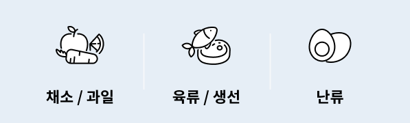
채소 / 과일
신선하게 보관하려면?
일반적으로 채소와 과일의 적정 보관 온도는 약 1~3℃에요. 냉장고 야채 칸 [신선 야채실]에 보관해야죠.
90% 이상의 수분으로 구성된 채소와 과일의 수분을 오래 유지하고 싶을 땐 용기나 비닐에 넣어 보관하는 것도 좋아요. 단, 수분 증발 등으로 용기 내부에 이슬이 맺히면 식품이 짓무르게 될 수 있으니 채반이 있는 용기를 사용하거나 키친타월로 감싸서 보관하면 짓무르지 않게 보관할 수 있어요.
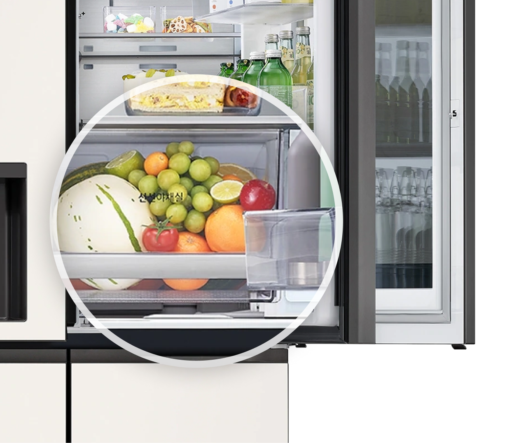
이런 과일과 채소는 주의하세요
냉장 온도에서 저온 장해를 입을 수 있는 과일과 채소는 주의가 필요해요. 주로 열대/아열대 원산지의 과채류는 저온 장해 식품이에요.
이런 과채류는 LG 디오스 김치톡톡에서는 [쌀/잡곡] 기능을 활용해서 보관하면 좋아요.
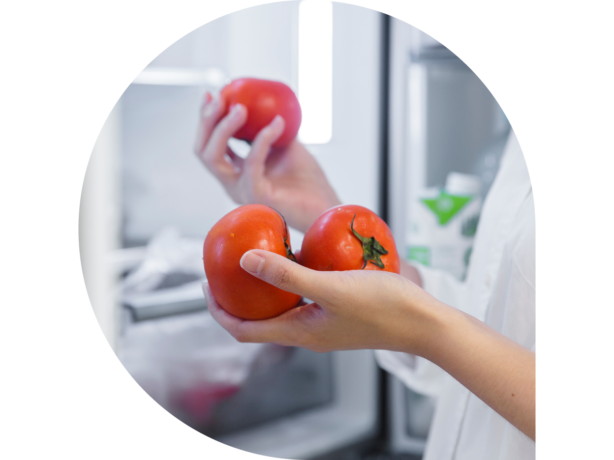
저온 장해 식품
이 외에도 오이, 고추, 아보카도, 자몽, 호박, 망고, 멜론 등의 열대/아열대 과채류는 저온 장해를 입을 수 있어요.
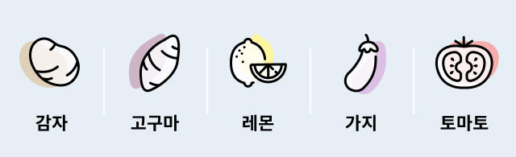
이런 과일은 따로 보관하세요
식물의 숙성과 노화를 촉진시키는 호르몬인 에틸렌이 많이 발생하는 과일은 다른 과일이나 채소와 분리해서 보관해야 해요.
에틸렌은 과채류가 익으면서 자연스럽게 생성되는데, 수확 후에도 식물의 기공을 통해 배출돼서 덜 익은 과일을 숙성시키는 효과도 있지만 시간이 흐를수록 과육을 무르게 하거나 누렇게 변색시키는 등 품질을 떨어뜨리기도 해요.
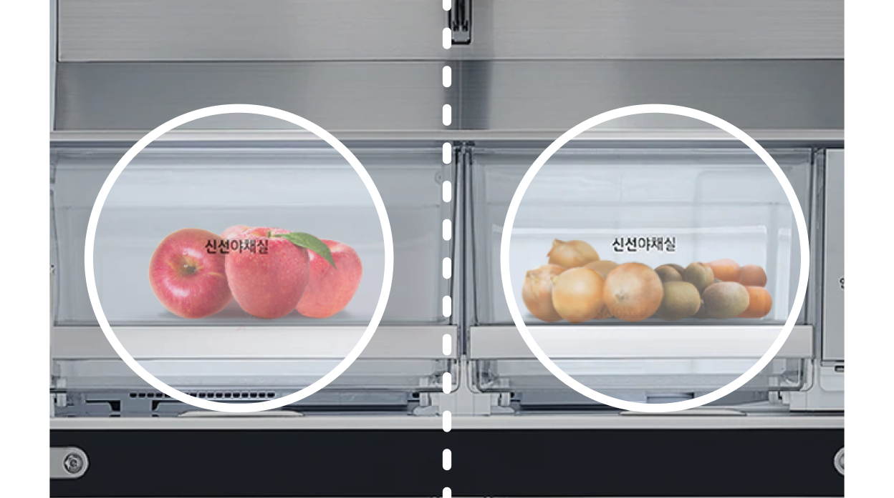
에틸렌을 많이 생성하는 대표 과일들
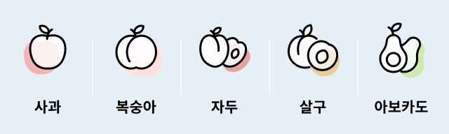
에틸렌에 피해를 입는 과일
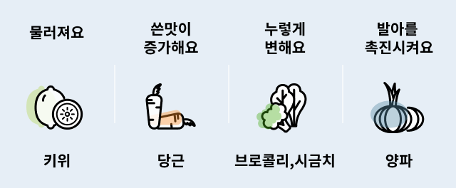
육류 / 생선
신선하게 보관하려면?
육류와 생선은 구입 후 최대한 빨리 먹는 것이 가장 좋죠. 보관에 적정한 온도는 약 -1.5℃ ~ -2.5℃로 얼지 않으면서 최대한 낮은 온도에서 보관하는 것이 중요해요.
LG 디오스 김치톡톡이나 LG SIGNATURE 냉장고의 팬트리처럼 냉장고에 [육류/생선] 기능이 있는 경우엔 일반 냉장실보다 더 오래 신선하게 보관할 수 있어요.
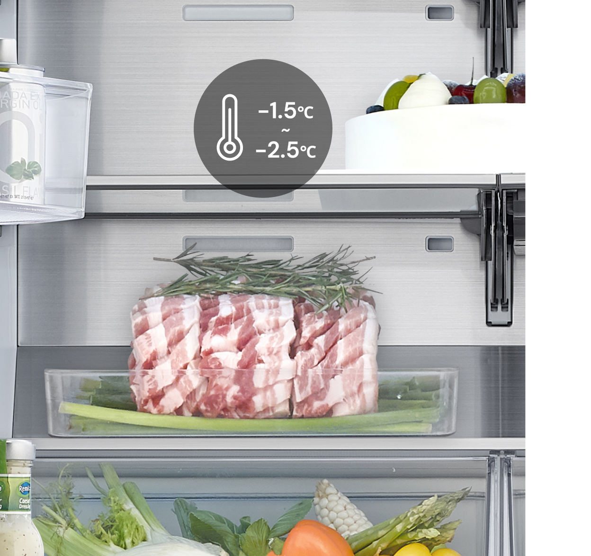
-
산패가 걱정되는 육류/생선은 보관 시 산화 방지를 위해 밀착력 좋은 식품 전용 랩을 사용하거나 진공 포장하는 것이 오래 보관하기 좋아요.
수 일 이상 보관해야 한다면 냉동실에 얼려 두는 것이 안전하고요, 해동하기 쉽도록 1회 먹을 분량으로 소분해서 보관하면 편리해요.
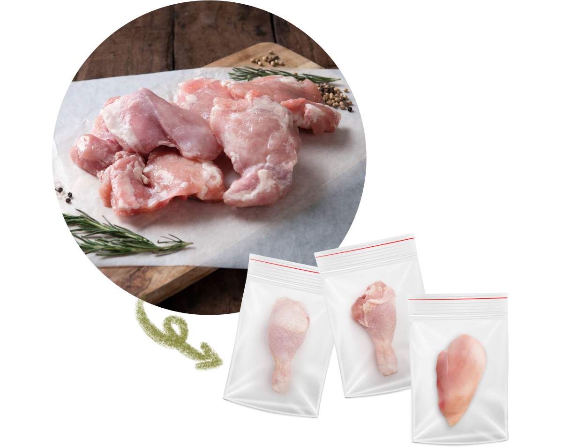
난류 (달걀)
신선하게 보관하려면?
신선도가 중요한 달걀을 포함한 신선식품들은 냉장고 문 쪽에 보관하면 안 돼요. 문을 여닫을 때마다 외부 온도에 노출되어 신선도가 빠르게 저하되거든요. 가급적 온도 변화의 폭이 적은 안쪽에 보관하는 것이 좋아요.
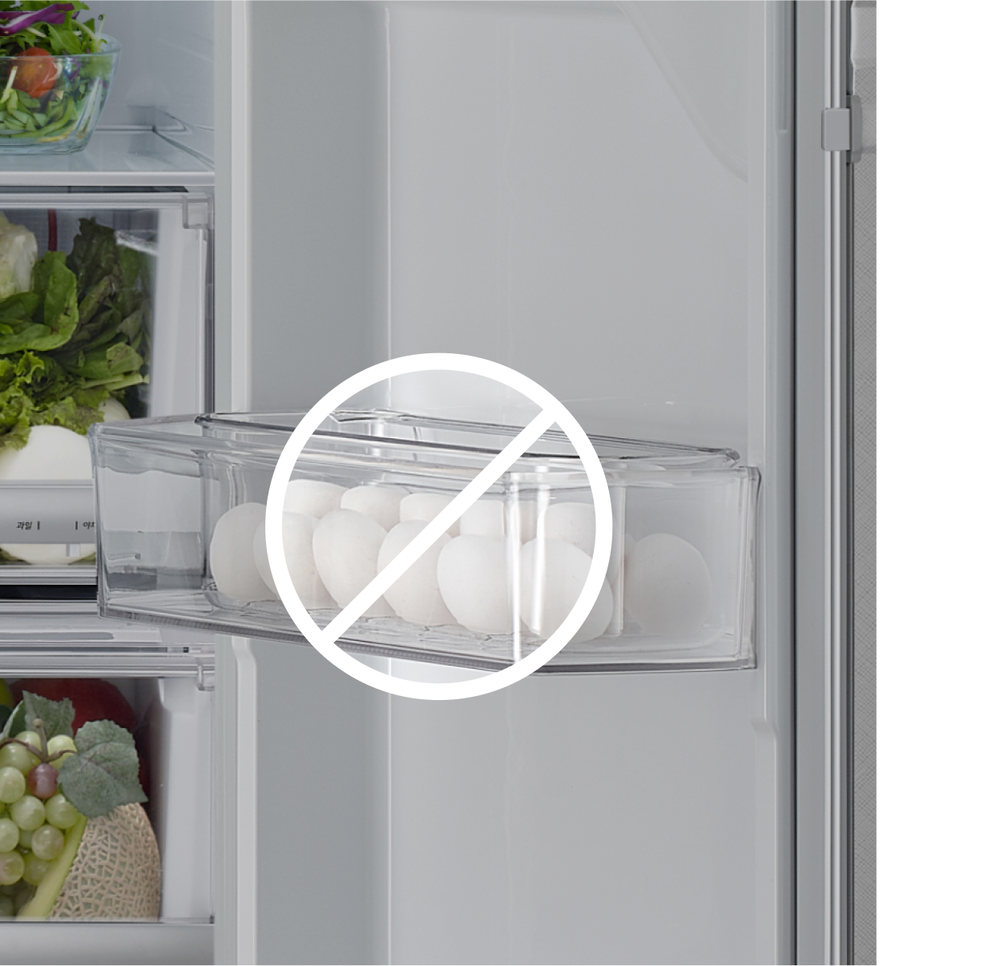
달걀 보관 시 물로 세척하지 마세요.
껍데기의 큐티클 층은 미생물의 침입을 막고 수분 증발을 억제해 주는 역할을 해요. 세척하면 이 큐티클 층이 사라지기 때문에 더 빨리 상할 수 있어요.
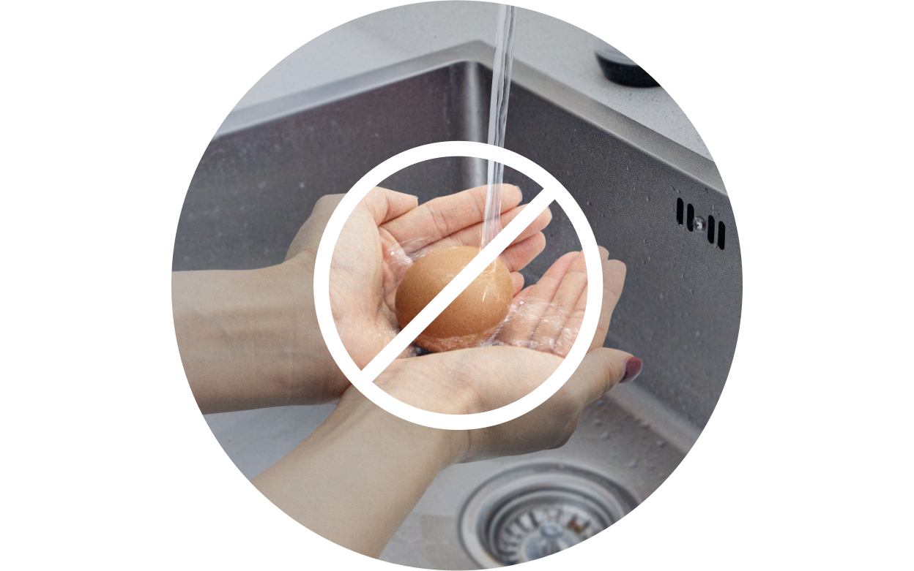
언제나 신선한 식재료로 맛 좋고 건강한 요리를 즐길 수 있어요.


LG ThinQ
ThinQ 하나로 더 좋아지는 일상
일상을 더 편하고 스마트하게 만들어주는 씽큐 앱을 지금 바로 만나보세요.
- #냉장고
- #식재료
- #식품보관법
- #식픔
- #식재료보관
- #에틸렌
- #신선식품
- #신선보관
- #신선식품보관